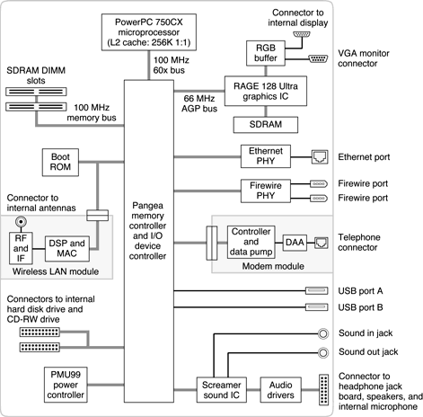

|
PATH |


This section is an overview of the major ICs and buses on the computer's main logic board.
Figure 2-1 is a simplified block diagram of the main logic board. The diagram shows the main ICs and the buses that connect them together.
Figure 2-1 Block diagram
The architecture of the iMac is designed around the PowerPC G3 microprocessor and a custom IC: the Pangea memory controller and the I/O device controller. The Pangea IC occupies the center of the block diagram.
The PowerPC G3 microprocessor is connected to the Pangea IC by a 60x bus with 64 data lines and a bus clock speed of 100 MHz. The Pangea IC has other buses that connect with the boot ROM, the hard disk drive and the CD-RW drive, the power controller IC, the sound IC, the internal modem module, and the optional wireless LAN module.
Each of the components listed here is described in one of the following sections.
© 2001 Apple Computer, Inc. (Last updated July 18, 2001)